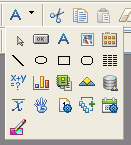
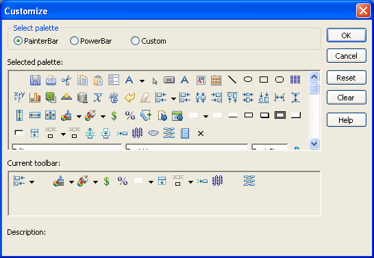
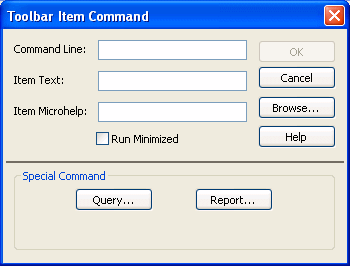

Toolbars provide buttons for the most common tasks in PowerBuilder. You can move (dock) toolbars, customize them, and create your own.
PowerBuilder uses three toolbars: the PowerBar, PainterBar, and StyleBar:
To reduce the size of toolbars, some toolbar buttons have a down arrow on the right that you can click to display a drop-down toolbar containing related buttons.
For example, the down arrow next to the Text button in the DataWindow painter displays the Controls drop-down toolbar, which has a button for each control you can place on a DataWindow object.

 Default button replaced The button you select from a drop-down toolbar replaces the
default button on the main toolbar. For example, if you select the
Picture button from the Controls drop-down toolbar, it replaces
the Text button in the PainterBar.
Default button replaced The button you select from a drop-down toolbar replaces the
default button on the main toolbar. For example, if you select the
Picture button from the Controls drop-down toolbar, it replaces
the Text button in the PainterBar.
Choosing to display text and PowerTips affects all toolbars.
 To control a toolbar using the pop-up menu:
To control a toolbar using the pop-up menu:
Position the pointer on a toolbar and display the pop-up menu.
Click the items you want.
A check mark means the item is currently selected.
 To control a toolbar using the Toolbars dialog
box:
To control a toolbar using the Toolbars dialog
box:
Select Tools>Toolbars from the menu bar.
The Toolbars dialog box displays.
Click the toolbar you want to work with (the current toolbar is highlighted) and the options you want.
PowerBuilder saves your toolbar preferences in the registry and the PowerBuilder initialization file.
You can use the mouse to move a toolbar.
 To move a toolbar with the mouse:
To move a toolbar with the mouse:
Position the pointer on the grab bar at the left of the toolbar or on any vertical line separating groups of buttons.
Press and hold the left mouse button.
Drag the toolbar and drop it where you want it.
As you move the mouse, an outlined box shows how the toolbar will display when you drop it. You can line it up along any frame edge or float it in the middle of the frame.
When you first start PowerBuilder, all the toolbars display one above another at the top left of the workspace. When you move a toolbar, you can dock (position) it:
You can customize toolbars with PowerBuilder buttons and with buttons that invoke other applications, such as a clock or text processor.
You can add, move, and delete buttons in any toolbar.
 To add a button to a toolbar:
To add a button to a toolbar:
Position the pointer on the toolbar and display the pop-up menu.
Select Customize.
The Customize dialog box displays.

Click the palette of buttons you want to use in the Select Palette group box.
Choose a button from the Selected Palette box and drag it to the position you want in the Current Toolbar box.
If you choose a button from the Custom palette, another dialog box displays so you can define the button.
For more information, see "Adding a custom button".
 Seeing what is available in the PowerBar PowerBuilder provides several buttons that do not display
by default in the PowerBar, but which you can add. To see what is
available, scroll the list of buttons and select one. PowerBuilder
lists the description for the selected button.
Seeing what is available in the PowerBar PowerBuilder provides several buttons that do not display
by default in the PowerBar, but which you can add. To see what is
available, scroll the list of buttons and select one. PowerBuilder
lists the description for the selected button.
 To move a button on a toolbar:
To move a button on a toolbar:
Position the pointer on the toolbar, display the pop-up menu, and select Customize.
In the Current toolbar box, select the button and drag it to its new position.
 To delete a button from a toolbar:
To delete a button from a toolbar:
Position the pointer on the toolbar, display the pop-up menu, and select Customize.
In the Current toolbar box, select the button and drag it outside the Current toolbar box.
You can restore the original setup of buttons on a toolbar at any time.
 To reset a toolbar:
To reset a toolbar:
Position the pointer on the toolbar, display the pop-up menu, and select Customize.
Click the Reset button, then Yes to confirm, then OK.
Whenever you want, you can remove all buttons from a toolbar. If you do not add new buttons to the empty toolbar, the toolbar is deleted. You can delete both built-in toolbars and toolbars you have created.
 To recreate a toolbar If you delete one of PowerBuilder's built-in toolbars,
you can recreate it easily. For example, to recreate the PowerBar,
display the pop-up menu, select New, and then select PowerBar1 in
the New Toolbar dialog box.
To recreate a toolbar If you delete one of PowerBuilder's built-in toolbars,
you can recreate it easily. For example, to recreate the PowerBar,
display the pop-up menu, select New, and then select PowerBar1 in
the New Toolbar dialog box.
 To clear or delete a toolbar:
To clear or delete a toolbar:
Position the pointer on the toolbar, display the pop-up menu, and select Customize.
Click the Clear button, then Yes to confirm.
The Current toolbar box in the Customize dialog box is emptied.
If you want to add new buttons, select them.
Click OK to save the toolbar if you added new buttons, or delete the toolbar if you did not.
You can add a custom button to a toolbar. A custom button can:
 To add a custom button:
To add a custom button:
Position the pointer on the toolbar, display the pop-up menu, and select Customize.
Select Custom in the Select Palette group box.
The custom buttons display in the Selected Palette box.
Select a custom button and drag it to where you want it in the Current Toolbar box.
The Toolbar Item Command dialog box displays. Different buttons display in the dialog box depending on which toolbar you are customizing:

Fill in the Command Line box using Table 2-2.
In the Item Text box, specify the text associated with the button in two parts separated by a comma: the text that displays on the button and text for the button's PowerTip:
ButtonText, PowerTip
For example:
Save, Save File
If you specify only one piece of text, it is used for both the button text and the PowerTip.
In the Item MicroHelp box, specify the text to appear as MicroHelp when the pointer is on the button.
| Button action | Toolbar Item Command dialog box entry |
|---|---|
| Invoke a PowerBuilder menu item | Type @MenuBarItem.MenuItemin the Command Line box. For example, to make the button mimic the Open item on the File menu, type @File.Open You can also use a number to refer to a menu item. The first item in a drop-down or cascading menu is 1, the second item is 2, and so on. Separator lines in the menu count as items. This example creates a button that pastes a FOR...NEXT statement into a script: @Edit.Paste Special.Statement.6 |
| Run an executable file outside PowerBuilder | Type the name of the executable file
in the Command Line box. Specify the full path name if the executable
is not in the current search path. To search for the file name, click the Browse button. |
| Run a query | Click the Query button and select the query from the displayed list. |
| Preview a DataWindow object | Click the Report button and select a DataWindow object from the displayed list. You can then modify the command-line arguments in the Command Line box. |
| Select a user object for placement in a window or custom user object | (Window and User Object painters only) Click the UserObject button and select the user object from the displayed list. |
| Assign a display format to a column in a DataWindow object | (DataWindow painter only) Click the Format
button to display the Display Formats dialog box. Select a data
type, then choose an existing display format from the list or define
your own in the Format box. For more about specifying display formats, see Chapter 22, "Displaying and Validating Data ." |
| Create a computed field in a DataWindow object | (DataWindow painter only) Click the Function button to display the Function for Toolbar dialog box. Select the function from the list. |
 To modify a custom button:
To modify a custom button:
Position the pointer on the toolbar, display the pop-up menu, and select Customize.
Double-click the button in the Current toolbar box.
The Toolbar Item Command dialog box displays.
Make your changes, as described in "Adding a custom button".
PowerBuilder has built-in toolbars. When you start PowerBuilder, you see what is called the PowerBar. In each painter, you also see one or more PainterBars. But PowerBar and PainterBar are actually types of toolbars you can create to make it easier to work in PowerBuilder.
A PowerBar is a toolbar that always displays in PowerBuilder, unless you hide it. A PainterBar is a toolbar that always displays in the specific painter for which it was defined, unless you hide it:
| For this toolbar type | The default is named | And you can have up to |
|---|---|---|
| PowerBar | PowerBar1 | Four PowerBars |
| PainterBar | PainterBar1 PainterBar2 and so on |
Eight PainterBars in each painter |
You can create a new PowerBar anywhere in PowerBuilder, but to create a new PainterBar, you must be in the workspace of the painter for which you want to define the PainterBar.
 To create a new toolbar:
To create a new toolbar:
Position the pointer on any toolbar, display the pop-up menu, and select New.
The New Toolbar dialog box displays.
 About the StyleBar In painters that do not have a StyleBar, StyleBar is on the
list in the New Toolbar dialog box. You can define a toolbar with
the name StyleBar, but you can add only painter-specific buttons,
not style buttons, to it.
About the StyleBar In painters that do not have a StyleBar, StyleBar is on the
list in the New Toolbar dialog box. You can define a toolbar with
the name StyleBar, but you can add only painter-specific buttons,
not style buttons, to it.
Select a PowerBar name or a PainterBar name and click OK.
The Customize dialog box displays with the Current toolbar box empty.
One at a time, drag the toolbar buttons you want from the Selected palette box to the Current toolbar box and then click OK.